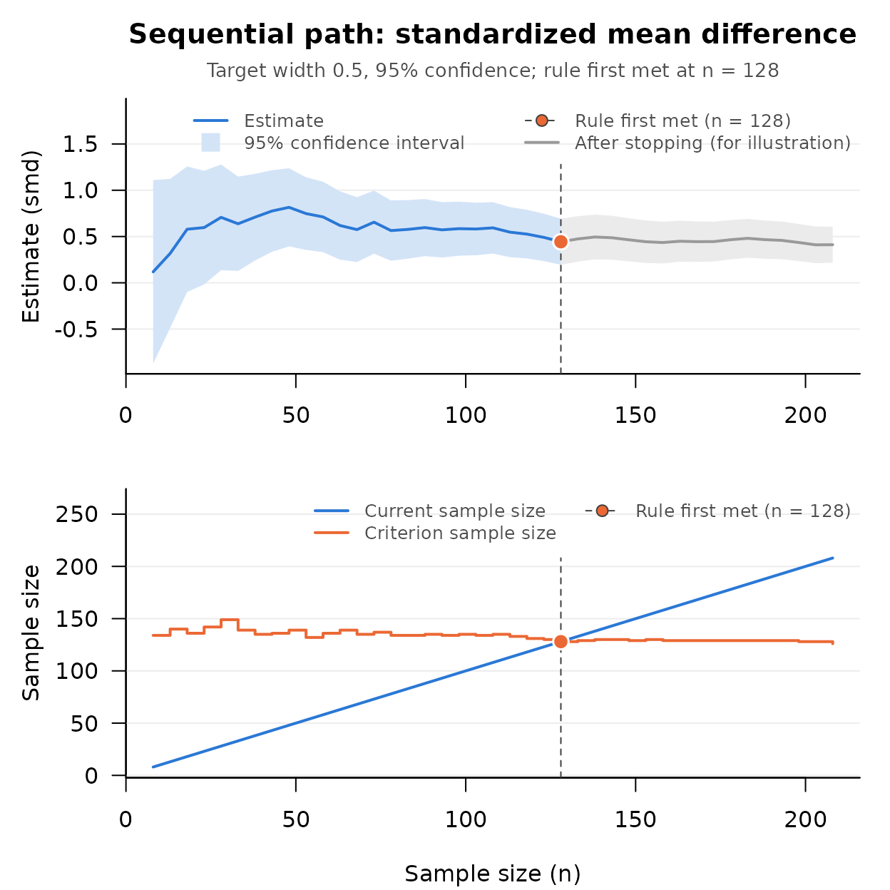

Sequential AIPE for the Standardized Mean Difference
Source:vignettes/seq-aipe-smd.Rmd
seq-aipe-smd.RmdThe Research Question
An education researcher is evaluating whether a supplemental tutoring program improves achievement relative to standard instruction. The effect size is the standardized mean difference, δ = (μ1 − μ2) / σ, the difference between the two population means in units of the common standard deviation (Kelley, 2007; Kelley & Rausch, 2006). The researcher wants to report how large the effect is, with a confidence interval narrow enough to be informative. Designing a study around the width of the confidence interval, and not around the outcome of a significance test, is the accuracy in parameter estimation (AIPE) approach (Maxwell, Kelley, & Rausch, 2008).
Fixed sample size AIPE planning (DMAR::ss_aipe_smd())
requires a planning value for δ. When no defensible planning value
exists, the sequential procedure of Kelley, Darku, and Chattopadhyay
(2018) applies: data are collected in stages, and a stopping rule
decides when the confidence interval for δ is no wider than a target the
researcher has chosen. The procedure is distribution free; it does not
assume that the scores are normal.
The Method
With n observations in each group, δ is estimated by
d = (M1 − M2) /
sp, the difference between the sample means divided
by the pooled standard deviation (Equation 24 of the article). The
sampling variance of d is approximately the asymptotic variance
divided by n. The asymptotic variance (xi squared in the
article) depends on the two means, the common variance, and the third
and fourth central moments of the two populations. The procedure
estimates it from the data without assuming a distribution; the estimate
is the row xi_squared of the result and is written
V below. With width for the target full width
(omega in the article) and z for the standard normal
quantile of the confidence level, the procedure has three parts.
-
The pilot sample size is the larger of a minimum
(
m_0, 4 by default) andceiling(2 * z / width)(Equation 21). -
The stopping rule is met at the first n,
at or after the pilot sample size, with
n >= (4 * z^2 / width^2) * (V + 1 / n)(Equation 22). The term1 / nis a correction that keeps the rule from being met too early. -
The confidence interval runs from
d - z * sqrt(V / n)tod + z * sqrt(V / n)(Equation 28). Whenever the rule is met its width is at mostwidth.
Workflow
The researcher commits to a target full width of 0.50 at the 95%
confidence level, computes the pilot sample size, collects the pilot
sample, and checks the stopping rule. The data here are simulated from a
population with δ = 0.50; in a real study each call to
new_tutored() or new_standard() is a new group
of students.
set.seed(113)
new_tutored <- function(n) rnorm(n, mean = 0.50, sd = 1)
new_standard <- function(n) rnorm(n, mean = 0, sd = 1)
m <- seq_aipe_smd_pilot(width = 0.50, conf_level = 0.95)
m
#> [1] 8
tutored <- new_tutored(m)
standard <- new_standard(m)
out <- seq_aipe_smd(tutored, standard, width = 0.50, conf_level = 0.95)
out
#> Sequential check (standardized mean difference)
#>
#> Current n : 8
#> Criterion n : 134
#> Target width : 0.5
#> Confidence level: 95%
#> Coverage : asymptotic; assess with sensitivity analysis
#>
#> lower_limit : -0.8729387
#> smd : 0.1182492
#> upper_limit : 1.109437
#> xi_squared : 2.046001
#> criterion_n : 134
#> current_n : 8
#>
#> Stopping rule met: FALSEThe row criterion_n is the right side of the stopping
rule, rounded up, and the limits are the interval described above. Both
can be reproduced from the other rows:
z <- qnorm(1 - (1 - 0.95) / 2)
d <- out$value[out$term == "smd"]
V <- out$value[out$term == "xi_squared"]
n <- out$value[out$term == "current_n"]
ceiling(4 * z^2 / 0.50^2 * (V + 1 / n))
#> [1] 134
d + c(-1, 1) * z * sqrt(V / n)
#> [1] -0.8729387 1.1094371The rule is not met at the pilot, so the study goes on: students are
added to each group, five at a time here, and the rule is checked again
after each addition, until it is met.
vignette("step-by-step-sequential-workflow", package = "SMSD")
writes that loop out. To show where it leads, the rest of the study is
simulated here in one piece, 200 more students per group in the order in
which they would have been recruited, and seq_path()
applies the check at every stage the study would have reached.
tutored <- c(tutored, new_tutored(200))
standard <- c(standard, new_standard(200))
path <- seq_path(seq_aipe_smd, list(group_1 = tutored, group_2 = standard),
width = 0.50, conf_level = 0.95, by = 5)
path
#> Sequential path: standardized mean difference
#>
#> Stages checked : 41 (n = 8 to 208 by 5)
#> First check at : the pilot sample size
#> Target width : 0.5
#> Confidence level: 95%
#> Rule first met : n = 128
#> Estimate there : smd = 0.4434397 [0.1946667, 0.6922126]
#>
#> n estimate lower_limit upper_limit criterion_n is_satisfied
#> 8 0.1182492 -0.87293869 1.1094371 134 FALSE
#> 13 0.3174077 -0.48780686 1.1226223 140 FALSE
#> 18 0.5788349 -0.09901432 1.2566840 136 FALSE
#> ...
#> 198 0.4355098 0.23537023 0.6356494 128 TRUE
#> 203 0.4102967 0.21259036 0.6080030 128 TRUE
#> 208 0.4115121 0.21716725 0.6058570 126 TRUE
#>
#> The estimate to report is the one at n = 128. Later rows show what
#> the rule would have said had sampling continued; they are not grounds
#> for choosing a different stopping point.
plot(path)
The rule was first met at 128 students per group, and that is where a
study run as planned stops. The students simulated beyond that point are
there only to complete the picture; they are drawn in gray in the plot,
and an estimate from a later stage may not be reported in place of the
one at the stopping point. At the stopping point the estimate is 0.443,
with a 95% confidence interval from 0.195 to 0.692. The width, 0.498, is
within the target, and the interval contains the population value of
0.50. The check at the stopping point is stored with the path as
attr(path, "final_check"), and seq_report()
writes the result up:
seq_report(path)
#> Sample size was determined with the sequential accuracy in parameter
#> estimation procedure for the standardized mean difference (Kelley,
#> Darku, & Chattopadhyay, 2018), with a target full width of 0.5 for the
#> 95% confidence interval. The stopping rule was evaluated from the pilot
#> sample size (n = 8 per group) onward, after every 5 additional
#> observations per group, and was first met at n = 128 per group. At that
#> sample size the estimate of the standardized mean difference was 0.443,
#> 95% CI [0.195, 0.692]. The confidence level is asymptotic; meeting the
#> width target does not establish nominal coverage at this sample size.
#>
#> Reference
#> Kelley, K., Darku, F. B., & Chattopadhyay, B. (2018). Accuracy in
#> parameter estimation for a general class of effect sizes: A
#> sequential approach. Psychological Methods, 23(2), 226–243.
#> doi:10.1037/met0000127The Correction to Equation 26
Equation 26 of Kelley, Darku, and Chattopadhyay (2018, p. 232) gives the asymptotic variance of the standardized mean difference, and the sample version printed under their Equation 27 is what the stopping rule uses. As printed, both omit a factor of one half in the term that carries the third central moments. With μk3 and μk4 for the third and fourth central moments of group k, the printed equation is
asymptotic variance = 2 − (μ1 − μ2)(μ13 − μ23) / σ4 + [(μ1 − μ2)2 / (4 σ6)] [(μ14 + μ24) / 4 − σ4 / 2]
and the corrected equation, which the package implements, is
asymptotic variance = 2 − (μ1 − μ2)(μ13 − μ23) / (2 σ4) + [(μ1 − μ2)2 / (4 σ6)] [(μ14 + μ24) / 4 − σ4 / 2].
The two agree when the means are equal and when the two groups have
the same third central moment, which includes every pair of symmetric
distributions; for normal data both reduce to 2 + δ2 / 4.
They differ when the means differ and the groups are skewed differently.
The authors’ derivation of the corrected equation is posted at https://kenkelley.org/wp-content/uploads/articles/Kelley_Darku_Chattopadhyay_Equation_26.pdf,
and the same document is installed with the package, at the path that
system.file("eq26_correction.pdf", package = "SMSD")
returns:
file.exists(system.file("eq26_correction.pdf", package = "SMSD"))
#> [1] TRUEA case in which the two forms differ shows which one describes the data. Take two populations with unit variance and a standardized mean difference of 0.5, one right skewed (a standardized chi square distribution with 3 degrees of freedom, with skewness √(8/3) and kurtosis 7) and the other its mirror image. With unit variances the third and fourth central moments are the skewness and the kurtosis.
xi_squared <- function(delta, skew_1, skew_2, kurt_1, kurt_2, half) {
2 - half * delta * (skew_1 - skew_2) +
(delta^2 / 4) * ((kurt_1 + kurt_2) / 4 - 1 / 2)
}
skew <- sqrt(8 / 3)
printed <- xi_squared(0.5, skew, -skew, 7, 7, half = 1)
corrected <- xi_squared(0.5, skew, -skew, 7, 7, half = 1 / 2)
c(printed = printed, corrected = corrected)
#> printed corrected
#> 0.5545068 1.3710034If the asymptotic variance divided by n is the sampling variance of d, then n times the variance of d across many samples should be close to the asymptotic variance. Four thousand samples of 200 per group:
set.seed(113)
n <- 200
reps <- 4000
row_var <- function(m) rowSums((m - rowMeans(m))^2) / (ncol(m) - 1)
x <- 0.5 + matrix((rchisq(reps * n, df = 3) - 3) / sqrt(6), nrow = reps)
y <- -matrix((rchisq(reps * n, df = 3) - 3) / sqrt(6), nrow = reps)
d <- (rowMeans(x) - rowMeans(y)) / sqrt((row_var(x) + row_var(y)) / 2)
n * var(d)
#> [1] 1.366181The simulated value, 1.366 (Monte Carlo standard error about 0.031),
agrees with the corrected form, 1.371, and not with the printed one,
0.555. The variance estimate that seq_aipe_smd() computes
from a large sample of the same two populations is an estimate of the
corrected quantity:
big_x <- 0.5 + (rchisq(50000, df = 3) - 3) / sqrt(6)
big_y <- -(rchisq(50000, df = 3) - 3) / sqrt(6)
big <- seq_aipe_smd(big_x, big_y, width = 0.10)
big$value[big$term == "xi_squared"]
#> [1] 1.368264A reader who applies the printed equation to data like these would compute a criterion sample size less than half of what the corrected equation gives, and an interval too narrow by a factor of about 1.6.
When the Estimate Is Not Yet Usable
The variance estimate is a difference of terms built from sample moments, and in a very small sample that difference can come out zero or negative even though the quantity it estimates is positive. A check on such a sample looks like this. The scores are ratings from a pilot of five per group at a target width of 0.80.
rating_1 <- c(7, 6, 6, 7, 6)
rating_2 <- c(5, 3, 4, 5, 5)
early <- seq_aipe_smd(rating_1, rating_2, width = 0.80)
early
#> Sequential check (standardized mean difference)
#>
#> Current n : 5
#> Criterion n : 6
#> Target width : 0.8
#> Confidence level: 95%
#> Coverage : asymptotic; assess with sensitivity analysis
#>
#> lower_limit : NA
#> smd : 2.696799
#> upper_limit : NA
#> xi_squared : 0.008
#> criterion_n : 6
#> current_n : 5
#>
#> Stopping rule met: FALSE
#>
#> Note: The variance estimate is not yet usable at this sample size (it
#> is zero, negative, or not finite), so the stopping rule is
#> reported as not met. Collect more data and check again.
attr(early, "variance_unusable")
#> [1] TRUENo variance has been estimated, so there is nothing from which to
build an interval or a criterion. The check says so in four ways: the
limits are NA; criterion_n is above
current_n; the attribute variance_unusable is
TRUE; and a note under the result says what happened. The
stopping rule is reported as not met, so a loop written on
attr(out, "is_satisfied") keeps sampling without any
special handling. The row xi_squared shows the lower bound
n−3 (here 5−3 = 0.008), not an
estimate.
This is a deliberate departure from the stopping rule as printed. The article bounds the variance estimate below by n−3 (its Equation 27), and the printed rule would use that bound in place of a zero or negative estimate. The consequence is easy to compute for this sample:
z <- qnorm(0.975)
4 * z^2 / 0.80^2 * (5^-3 + 1 / 5)
#> [1] 4.993896
2 * z * sqrt(5^-3 / 5)
#> [1] 0.1567971The right side of the rule is just under 5, so the rule would be met
at once with 5 per group, and the interval would be 0.157 wide where
0.80 was requested: a study that stops at its pilot and reports a
precision it does not have. The package uses the bound as the article
prescribes whenever the estimate is positive, however small, and treats
an estimate that is zero, negative, or not finite as what it is, no
estimate yet. The same rule applies across the package’s check functions
(see “An Unusable Variance Estimate” in
help("SMSD-package")).
With more data the estimate becomes usable and the rule is evaluated in the ordinary way:
rating_1 <- c(rating_1, 5, 7, 6, 4, 6)
rating_2 <- c(rating_2, 4, 6, 3, 5, 4)
seq_aipe_smd(rating_1, rating_2, width = 0.80)
#> Sequential check (standardized mean difference)
#>
#> Current n : 10
#> Criterion n : 82
#> Target width : 0.8
#> Confidence level: 95%
#> Coverage : asymptotic; assess with sensitivity analysis
#>
#> lower_limit : 0.5535762
#> smd : 1.676233
#> upper_limit : 2.798889
#> xi_squared : 3.280935
#> criterion_n : 82
#> current_n : 10
#>
#> Stopping rule met: FALSEFor the standardized mean difference this situation is uncommon at
the widths studies use. It arose above because the pilot was very small
and the ratings take few distinct values. In the simulations of
continuous data reported in ?seq_aipe_smd (a population
value of 0.5, target widths of 0.4 and 0.2, normal and right skewed
data) the variance estimate was never zero or negative, and at a width
of 0.8 with normal data that happened in fewer than 1 study in 1,000
(?seq_aipe_sensitivity). It is common for some other effect
sizes at wide targets, the correlation and the regression slope above
all, and
vignette("seq-aipe-correlations", package = "SMSD") gives
the figures. A second, rarer case is reported the same way: when neither
group shows any variation the estimate itself cannot be computed, and
the check carries a note that says so.
What the Procedure Guarantees
The width is at most the target whenever the rule is met. That holds
in every sample. The coverage of the interval approaches the confidence
level as the target width narrows and the final sample grows (Theorem 4
of the article); it is an asymptotic property. How good the
approximation is at a given width depends on the population value and on
the distribution of the scores. In simulations of the procedure as
shipped, with a population value of 0.5 and one observation per group
added at each stage, 95% intervals contained the population value in
0.952 of studies at a target width of 0.4 (6,000 studies, about 200 per
group at the end) and in 0.946 at a width of 0.2 (2,000 studies, about
790 per group) for normal data, and in 0.944 and 0.949 for right skewed
data (?seq_aipe_smd). At a width of 0.8, where a study ends
with about 51 per group, coverage was still 0.95 for normal data
(?seq_aipe_sensitivity). For right skewed data at that
width it is two to three hundredths lower. It is lower again at targets
wider still, for normal data as well, and the more so the larger the
population value.
seq_aipe_smd_sensitivity() runs the procedure many times
for a population value, width, batch size, and distribution (normal or
right skewed) of the user’s choosing, and reports the final sample size
and the coverage to expect;
vignette("sensitivity-analysis", package = "SMSD")
describes its output and runs the skewed case just mentioned. When each
observation has a price and the goal is the smallest total cost of
sampling and estimation error, seq_mr_smd() is the
procedure to use
(vignette("mrpe-smd", package = "SMSD")).
References
Kelley, K. (2007). Confidence intervals for standardized effect sizes: Theory, application, and implementation. Journal of Statistical Software, 20(8), 1–24. doi:10.18637/jss.v020.i08
Kelley, K., Darku, F. B., & Chattopadhyay, B. (2018). Accuracy in parameter estimation for a general class of effect sizes: A sequential approach. Psychological Methods, 23(2), 226–243. doi:10.1037/met0000127
Kelley, K., & Rausch, J. R. (2006). Sample size planning for the standardized mean difference: Accuracy in parameter estimation via narrow confidence intervals. Psychological Methods, 11(4), 363–385. doi:10.1037/1082-989X.11.4.363
Maxwell, S. E., Kelley, K., & Rausch, J. R. (2008). Sample size planning for statistical power and accuracy in parameter estimation. Annual Review of Psychology, 59, 537–563. doi:10.1146/annurev.psych.59.103006.093735